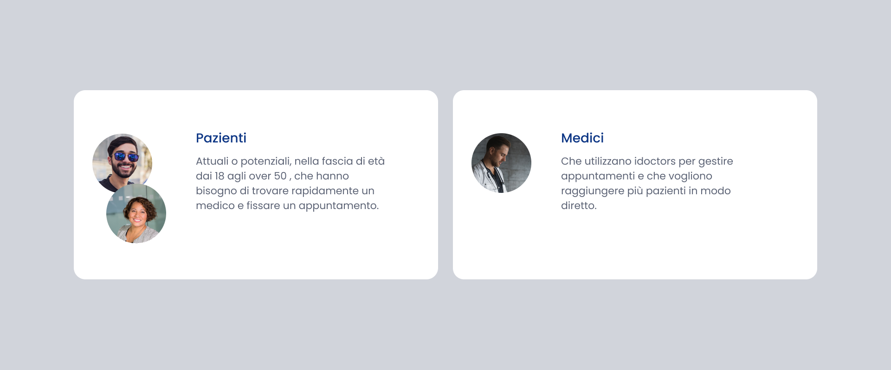
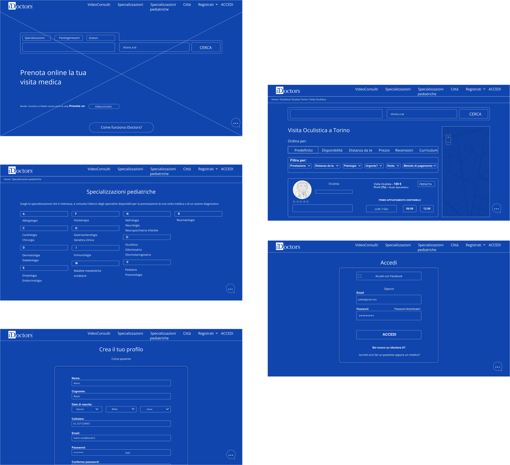
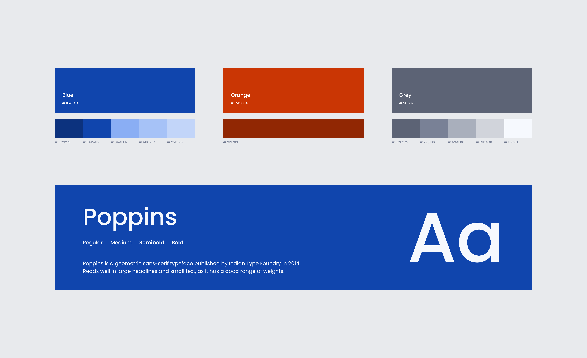
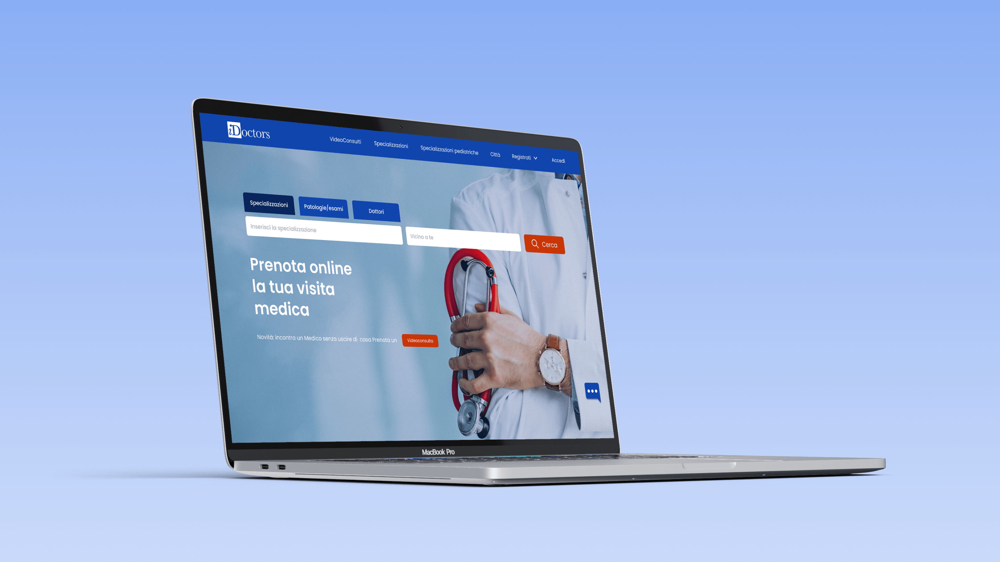
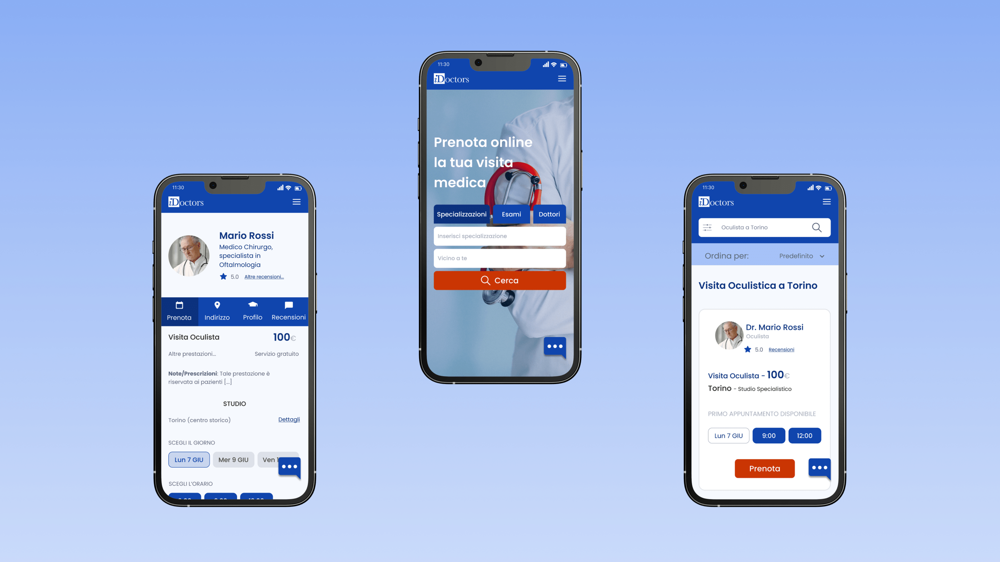

Prenota online la tua visita medica
Idoctors
IDOCTORS è il primo servizio online nato in Italia nel 2008 per agevolare medici e pazienti nella prenotazione e gestione delle visite specialistiche.
Migliorare l'esperienza utente e facilitare l’interazione del sito, dalla fase di ricerca alla fase di prenotazione di una visita medica.
Il mio ruolo è stato quello di condurre una user research, creare una nuova information architecture, migliorare la parte visual ed effettuare un usability testing per poter effettuare la riprogettazione del sito nelle due versioni desktop e mobile.
Ho iniziato effettuando un'analisi “as is” e un’analisi dell’architettura dell’informazione del sito per capire il problema. Ho proseguito analizzando i competitors, per ottenere informazioni dagli altri siti che offrono lo stesso servizio ed infine ho stabilito il target di riferimento.

I problemi che le persone hanno riscontrato nella navigazione del sito, sono:
pagine troppo lunghe e difficili da consultare, funzioni come accedi e registrati difficili da trovare, menu poco intuitivo e mancanza di alcuni elementi importanti come filtri e live chat.
Quindi tenendo conto di questi dati, ho creato dei wireframe per capire come riorganizzare la struttura generale e migliorare la navigazione del sito.


Per dare una nuova immagine al sito, ho definito una nuova color palette, una nuova gerarchia tipografica e ho lavorato sulla riprogettazione degli elementi grafici che definiscono l'interfaccia. Infine con il prototipo ho effettuato un test per validare la riprogettazione del sito.



I dati emersi, dopo la fase di test, hanno dimostrato:
· l'interfaccia più semplice e intuitiva, migliora la navigazione;
· i filtri aiutano i pazienti a cercare medici in base a vari criteri ;
· il paziente può visualizzare i profili dettagliati di ciascun medico;
· il paziente, selezionando una data e un orario procede in modo semplice con la prenotazione della visita.
Per quanto riguarda i medici, invece, il sito consente di avere maggiori info su come registrarsi e ricevere assistenza immediata con la chat.